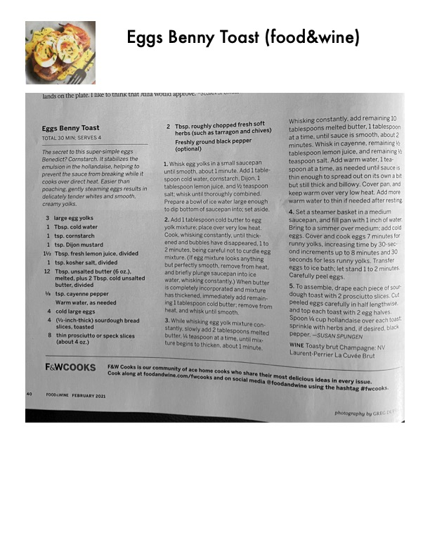

Eggs Benny Toast

Original cookbook page 181
The secret to this super-simple eggs Benedict? Cornstarch. It stabilizes the emulsion in the hollandaise, helping to prevent the sauce from breaking while it cooks over direct heat. Easier than poaching, gently steaming eggs results in delicately tender whites and smooth, creamy yolks.
Total: 30 minutes
Ingredients
- 3 large egg yolks
- 1 Tbsp. cold water
- 1 tsp. cornstarch
- 1 tsp. Dijon mustard
- 1½ Tbsp. fresh lemon juice, divided
- 1 tsp. kosher salt, divided
- 12 Tbsp. unsalted butter (6 oz.), melted, plus 2 Tbsp. cold unsalted butter, divided
- ⅛ tsp. cayenne pepper
- Warm water, as needed
- 4 cold large eggs
- 4 (¼-inch-thick) sourdough bread slices, toasted
- 8 thin prosciutto or speck slices (about 4 oz.)
- 2 Tbsp. roughly chopped fresh soft herbs (such as tarragon and chives)
- Freshly ground black pepper (optional)
Instructions
- Whisk egg yolks in a small saucepan until smooth, about 1 minute. Add 1 tablespoon cold water, cornstarch, Dijon, 1 tablespoon lemon juice, and ½ teaspoon salt; whisk until thoroughly combined. Prepare a bowl of ice water large enough to dip bottom of saucepan into; set aside.
- Add 1 tablespoon cold butter to egg yolk mixture; place over very low heat. Cook, whisking constantly, until thickened and bubbles have disappeared, 1 to 2 minutes, being careful not to curdle egg mixture. When butter is completely incorporated and mixture has thickened, immediately add remaining 1 tablespoon cold butter; remove from heat, and whisk until smooth.
- While whisking egg yolk mixture constantly, slowly add 2 tablespoons melted butter, ¼ teaspoon at a time, until mixture begins to thicken, about 1 minute. Whisking constantly, add remaining 10 tablespoons melted butter, 1 tablespoon at a time, until sauce is smooth, about 2 minutes. Whisk in cayenne, remaining ½ tablespoon lemon juice, and remaining ½ teaspoon salt. Add warm water, 1 teaspoon at a time, as needed until sauce is thin enough to spread out on its own a bit but still thick and billowy. Cover pan, and keep warm over very low heat.
- Set a steamer basket in a medium saucepan, and fill pan with 1 inch of water. Bring to a simmer over medium; add cold eggs. Cover and cook eggs 7 minutes for runny yolks, increasing time by 30-second increments up to 8 minutes and 30 seconds for less runny yolks. Transfer eggs to ice bath; let stand 1 to 2 minutes. Carefully peel eggs.
- To assemble, drape each piece of sourdough toast with 2 prosciutto slices. Cut peeled eggs carefully in half lengthwise, and top each toast with 2 egg halves. Spoon ¼ cup hollandaise over each toast, sprinkle with herbs and, if desired, black pepper.
Recipe #181 from collection